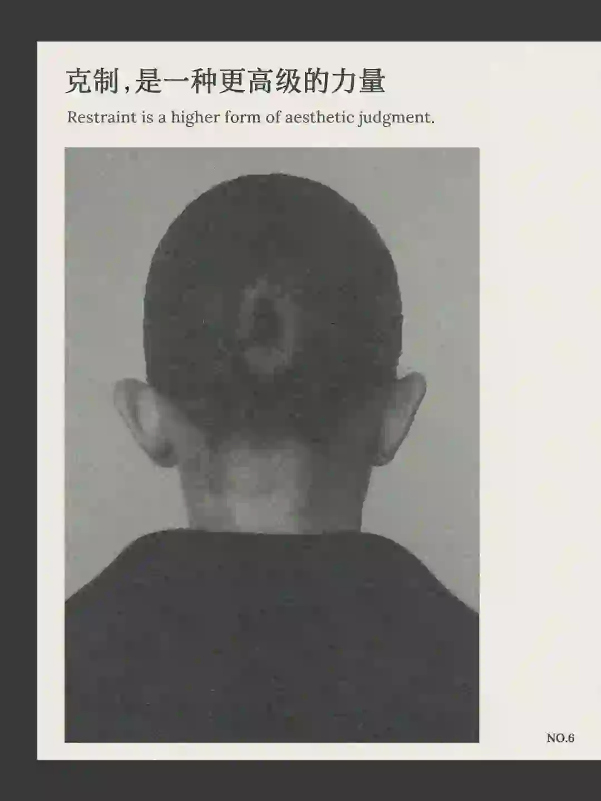
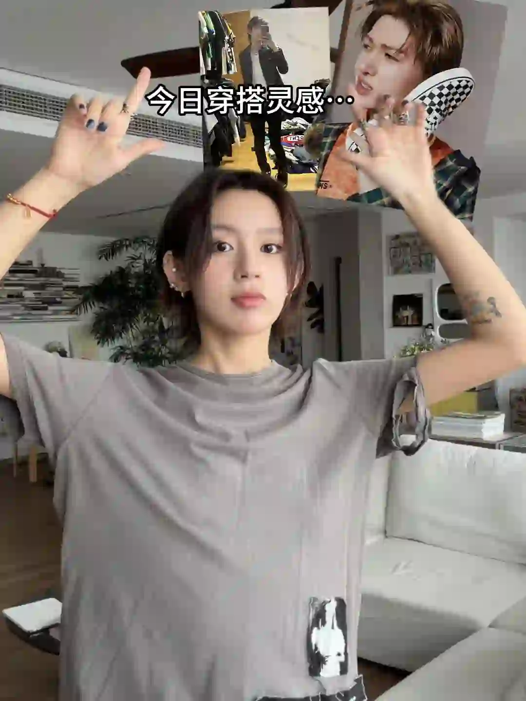
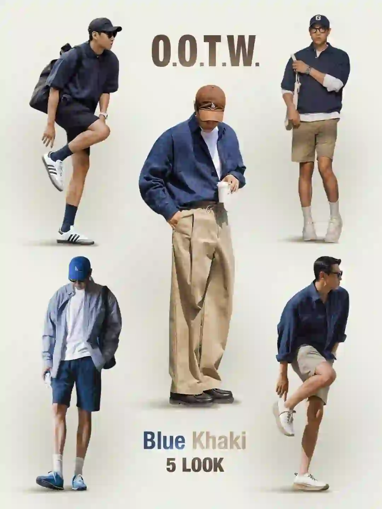
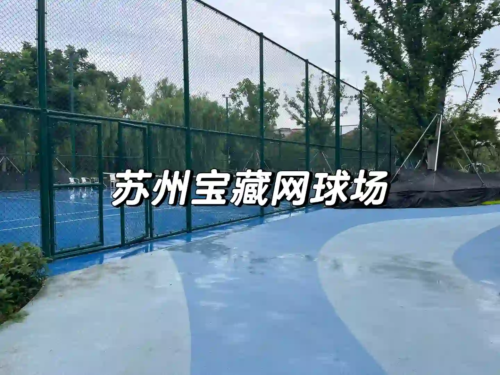
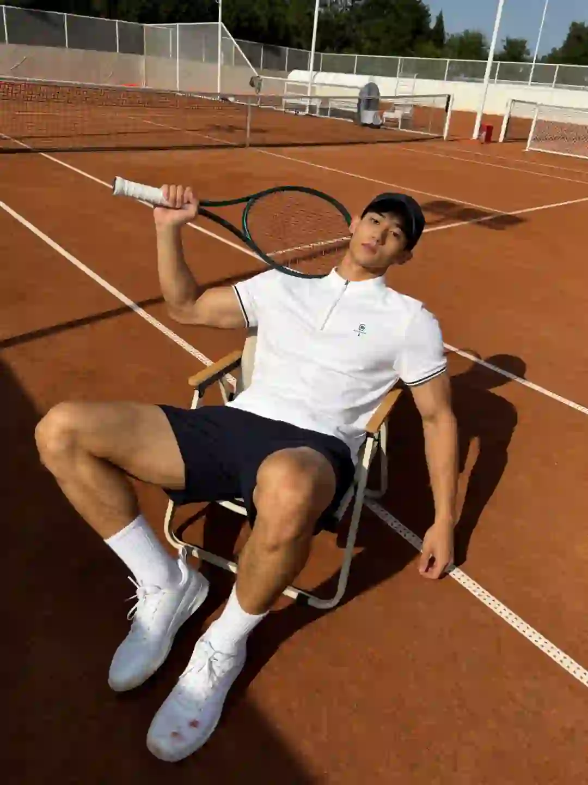

2026年5月2日
05月02日报告
生成时间：2026-05-02 · 范围：时尚 / 穿搭 / 网球
今日参考账号：Nest & Coast / 负像之诗 / 少音
今日高信号标题：大道至简，克制之美更令人钟情 ｜ 100位宝藏摄影大师 | jorgemchagas ｜ Jacques Wei 衣橱| 一周穿搭look
竞品策略变化：未命中监控竞品样本
今日高信号标题：大道至简，克制之美更令人钟情 ｜ 100位宝藏摄影大师 | jorgemchagas ｜ Jacques Wei 衣橱| 一周穿搭look
竞品策略变化：未命中监控竞品样本

时尚 · 01
大道至简，克制之美更令人钟情
⭐ 1879
👍 3644
今天可学
- 内容结构：人物 + 4图，更像单点表达
- 这条流量带有明显外部加成，只拆内容结构与包装，不原样复制流量来源
- 正文入口：📰N&C潮汐杂志No.6 - 身处在一个“过度”的年代，表达变得愈发急迫，态度与立场被反复强调 克制，是一种更高级的力量。它不是禁欲，也不非保守，克制是一种向内的探索后的自主选择，…
- 标签聚焦：#浪漫生活的记录者 / #NestandCoast / #品牌灵感 / #高级感

时尚 · 02
100位宝藏摄影大师 | jorgemchagas
⭐ 957
👍 3948
今天可学
- 内容结构：人物 + 4图，更像单点表达
- 收藏效率高，说明用户把它当成可复用模板/知识卡，不只是刷到即过
- 评论活跃，适合加入观点冲突、对比案例或常见误区来拉讨论
- 正文入口：英国摄影师📷jorgemchagas jorgemchagas以极简光影与剪影构建城市叙事，车站、街头的孤独身影与建筑线条交织，动态模糊与反射构图传递静谧哲思。 “在流动的瞬间里，…
- 标签聚焦：#拍出电影感 / #一张照片高级感 / #笔记灵感 / #人文扫街
时尚 · 03
Jacques Wei 衣橱| 一周穿搭look
⭐ 779
👍 1479
今天可学
- 内容结构：人物 + 0图，更像单点表达
- 收藏效率高，说明用户把它当成可复用模板/知识卡，不只是刷到即过
- 正文入口：（正文为空或未取到）

时尚 · 04
“秀场积累”Emporio Armani 26秋冬时装秀
⭐ 676
👍 1273
今天可学
- 内容结构：人物 + 9图，更像资料型合集
- 这条流量带有明显外部加成，只拆内容结构与包装，不原样复制流量来源
- 正文入口：Emporio Armani 2026秋冬系列再现米兰式优雅。本季以标志性“夜空蓝”与“高级灰”为主调，为都市男女织就了一场“静奢”的冬日梦境。 褪去刻板的权力套装，大秀聚焦剪裁温…
- 标签聚焦：#小红书时装周群聊 / #每天一个穿搭灵感 / #RedFaceOfFashion100 / #审美提升
时尚 · 05
跟着Cortis认识国外小众品牌
⭐ 467
👍 896
今天可学
- 内容结构：产品 + 0图，更像单点表达
- 这条流量带有明显外部加成，只拆内容结构与包装，不原样复制流量来源
- 正文入口：（正文为空或未取到）
时尚赛道今日方法论
- 样本依据：100位宝藏摄影大师 | jorgemchagas / Jacques Wei 衣橱| 一周穿搭look
- 当天结构信号：人物封面 + 4图 最强；优先学习样本 2 条，低收藏流量样本 0 条。
- 时尚赛道今天跑出来的是“审美判断 + 资料感整理”：像 Jacques Wei 衣橱| 一周穿搭look 这类高收藏样本，核心不是讲步骤，而是把趋势、风格线索和案例并排给足，用户才愿意以 52.7% 的收藏率反复回看。
- 执行建议：标题先抛出趋势/风格判断，再给明确收益；正文少讲空泛氛围，多给风格标签、对照案例和可复看的视觉结论，让内容更像灵感资料卡。
- 风险提醒：大道至简，克制之美更令人钟情 已标记为 [不可复制]，只拆结构，不作为明日选题原样跟进。
今日参考账号：碳酸饮料拜拜 / 查理叔叔 / Shanghai sights
今日高信号标题：今天的穿搭灵感是！CORTIS！🤟🏿 ｜ 👨🏻40+叔叔｜5套男生穿搭学会蓝色搭卡其色 ｜ 上海秋冬男士街拍年度18图（秋冬篇）
竞品策略变化：未命中监控竞品样本
今日高信号标题：今天的穿搭灵感是！CORTIS！🤟🏿 ｜ 👨🏻40+叔叔｜5套男生穿搭学会蓝色搭卡其色 ｜ 上海秋冬男士街拍年度18图（秋冬篇）
竞品策略变化：未命中监控竞品样本

穿搭 · 01
今天的穿搭灵感是！CORTIS！🤟🏿
⭐ 1204
👍 14240
今天可学
- 内容结构：视频封面 + 视频，更像视频示范/单点表达
- 点赞高于收藏，偏流量型曝光内容，不值得原样照抄
- 评论活跃，适合加入观点冲突、对比案例或常见误区来拉讨论
- 正文入口：翻出了我压箱底的紧身牛仔裤hhh 搭配最近和CORTIS一样火的拿破仑夹克和这双马丁同款Vans Authentic帆布鞋 黑白造型浅浅和猪猪学习一下穿出养胃感😬
- 标签聚焦：#ootd / #Vans / #VansAuthentic / #CORTIS超VANS

穿搭 · 02
👨🏻40+叔叔｜5套男生穿搭学会蓝色搭卡其色
⭐ 1133
👍 1575
今天可学
- 内容结构：文字卡 + 9图，更像资料型合集
- 收藏效率高，说明用户把它当成可复用模板/知识卡，不只是刷到即过
- 正文入口：蓝色搭配卡其色穿搭教程，会穿真的很简单
- 标签聚焦：#穿搭合集 / #OOTW / #胶囊衣橱 / #男生休闲风穿搭
穿搭 · 03
上海秋冬男士街拍年度18图（秋冬篇）
⭐ 624
👍 2829
今天可学
- 内容结构：人物 + 0图，更像单点表达
- 收藏效率高，说明用户把它当成可复用模板/知识卡，不只是刷到即过
- 评论活跃，适合加入观点冲突、对比案例或常见误区来拉讨论
- 正文入口：（正文为空或未取到）
穿搭 · 04
爹系穿搭｜杂灰针织开衫
⭐ 535
👍 1322
今天可学
- 内容结构：人物 + 0图，更像单点表达
- 收藏效率高，说明用户把它当成可复用模板/知识卡，不只是刷到即过
- 评论活跃，适合加入观点冲突、对比案例或常见误区来拉讨论
- 正文入口：（正文为空或未取到）
穿搭 · 05
SUMMER🇰🇷 * 孙锡久🤍
⭐ 309
👍 1883
今天可学
- 内容结构：人物 + 9图，更像资料型合集
- 这条流量带有明显外部加成，只拆内容结构与包装，不原样复制流量来源
- 评论活跃，适合加入观点冲突、对比案例或常见误区来拉讨论
- 标签聚焦：#韩风穿搭分享🇰🇷 / #孙锡久 / #认领一个韩国男友 / #博主喜欢的韩国演员
穿搭赛道今日方法论
- 样本依据：👨🏻40+叔叔｜5套男生穿搭学会蓝色搭卡其色 / 上海秋冬男士街拍年度18图（秋冬篇）
- 当天结构信号：人物封面 + 9图 最强；优先学习样本 3 条，低收藏流量样本 1 条。
- 穿搭赛道今天最有效的是“整套可抄作业方案”：高收藏样本 👨🏻40+叔叔｜5套男生穿搭学会蓝色搭卡其色 说明，只要场景清楚、look 数量够多、搭配结果一眼能看懂，就更容易拿到 71.9% 级别的收藏反馈。
- 执行建议：优先做通勤/职业/一周不重样/套装盘点这类清单式内容；封面先给完整上身结果，图组里再拆单品变化和搭配理由，不要只发单套氛围图。
- 反例提醒：今天的穿搭灵感是！CORTIS！🤟🏿 点赞高但收藏低，说明这类曝光型内容能带流量，不适合直接当明日主打法。
- 风险提醒：SUMMER🇰🇷 * 孙锡久🤍 已标记为 [不可复制]，只拆结构，不作为明日选题原样跟进。
今日参考账号：Takuya Komura 小村拓也 / 布吉岛🎾 / 小灰🎾
今日高信号标题：attack tennis 🎾 ｜ 男士们！请用网球穿搭帅哭我[抽泣R] ｜ 24小时灯光！苏州又一处不收费公益网球场
竞品策略变化：未命中监控竞品样本
今日高信号标题：attack tennis 🎾 ｜ 男士们！请用网球穿搭帅哭我[抽泣R] ｜ 24小时灯光！苏州又一处不收费公益网球场
竞品策略变化：未命中监控竞品样本

网球 · 01
attack tennis 🎾
⭐ 962
👍 4434
今天可学
- 内容结构：视频封面 + 视频，更像视频示范/单点表达
- 收藏效率高，说明用户把它当成可复用模板/知识卡，不只是刷到即过
- 标签聚焦：#tennis / #rf / #テニス / #网球

网球 · 02
男士们！请用网球穿搭帅哭我[抽泣R]
⭐ 518
👍 1119
今天可学
- 内容结构：人物 + 1图，更像单点表达
- 收藏效率高，说明用户把它当成可复用模板/知识卡，不只是刷到即过
- 评论活跃，适合加入观点冲突、对比案例或常见误区来拉讨论
- 标签聚焦：#网瘾是网球的网 / #网球热土 / #运动男孩 / #运动的男人

网球 · 03
24小时灯光！苏州又一处不收费公益网球场
⭐ 155
👍 143
今天可学
- 内容结构：人物 + 9图，更像资料型合集
- 收藏效率高，说明用户把它当成可复用模板/知识卡，不只是刷到即过
- 评论活跃，适合加入观点冲突、对比案例或常见误区来拉讨论
- 正文入口：苏州园区又多了一处公益网球场，24小时灯光 打球不用pay money，想什么时候打就什么时候打
- 标签聚焦：#网球尖子生 / #网球热土 / #苏州网球搭子 / #苏州网球场
网球 · 04
网球穿搭分享🎾
⭐ 706
👍 1784
今天可学
- 内容结构：人物 + 0图，更像单点表达
- 收藏效率高，说明用户把它当成可复用模板/知识卡，不只是刷到即过
- 评论活跃，适合加入观点冲突、对比案例或常见误区来拉讨论
- 正文入口：（正文为空或未取到）

网球 · 05
来打球还是被球打?
⭐ 288
👍 2096
今天可学
- 内容结构：人物 + 9图，更像资料型合集
- 收藏与点赞较平衡，可学选题包装，但仍需补强可执行细节
- 评论活跃，适合加入观点冲突、对比案例或常见误区来拉讨论
- 正文入口：周末北京终于暖起来，可以短裤短袖好好打球了，下个月就法网了，红土走起，白色polo搭深蓝的撞色是最适合红土球场的经典穿搭，polo轻奢，6寸短裤显腿长，打完直接赴约聚会也OK～
- 标签聚焦：#体育生 / #美式穿搭 / #运动系质感风 / #Wilson
网球赛道今日方法论
- 样本依据：attack tennis 🎾 / 男士们！请用网球穿搭帅哭我[抽泣R]
- 当天结构信号：人物封面 + 9图 最强；优先学习样本 4 条，低收藏流量样本 0 条。
- 网球赛道今天胜出的不是热闹球场感，而是“动作纠错/装备收益/新手可执行”：高收藏样本 24小时灯光！苏州又一处不收费公益网球场 证明，只要用户能马上拿去练，收藏率就能来到 108.4%。
- 执行建议：标题写清动作部位、错误修正或装备收益；内容里给慢动作、步骤和上场场景。明星/赛事样本只借包装，不把热点本身当方法论。
- 自动抽取规则：仅收录收藏率 >20% 且未被标记为 [不可复制] 的标题模板
- 写入目标：/Users/zhangxiaosong/shared/context/xhs-knowledge/topics/title-templates.md
- 把今天高收藏、高可复制的打法优先塞进明日发帖计划
- 竞品若连续两天从展示型转向教程/资料型，单独开策略变更记录
- 对被标注 [不可复制] 的样本，只拆结构，不抄流量来源